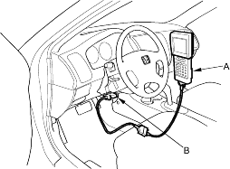

- Turn the ignition switch ON (II).
All models:
- The blinking frequency indicates the DTC. DTCs are indicated by a series of long and short blinks. Add the long and short blinks together to determine the DTC. After determining the DTC, refer to the DTC Troubleshooting Index.
The system will not indicate the DTC unless these conditions are met:
- Set the front wheels in the straight ahead driving position.
- The ignition switch is turned ON (II).
- The engine is stopped.
- The SCS circuit is shorted to body ground before the ignition switch is turned ON (II).
Example of DTC 23

Except KB, KE, KG, TR models:
- Turn the ignition switch OFF.
- Disconnect the DLC terminal box from the DLC.
KB, KE, KG, TR models:
- Turn the ignition switch OFF, and remove the SCS short connector.
- Perform the DTC erasure.
NOTE:
- The Malfunction Indicator Lamp (MIL) will stay on after the engine is started if the SCS short connector (DLC terminal box terminals No. 4 and No. 9) is connected.
- If the EPS indicator does not come on, always check for an open or a short to ground in the SCS circuit before troubleshooting the system.
Honda PGM Tester Method:
- With the ignition switch OFF, connect the Honda PGM Tester (A) to the 16P Data Link Connector (DLC) (B) located under the dash on the driver's side of the vehicle.

*: The illustration shows LHD model.
- Turn the ignition switch ON (II), and clear the DTC(s) by following the screen prompts on the PGM Tester.
NOTE: See the Honda PGM Tester user's manual for specific instructions.